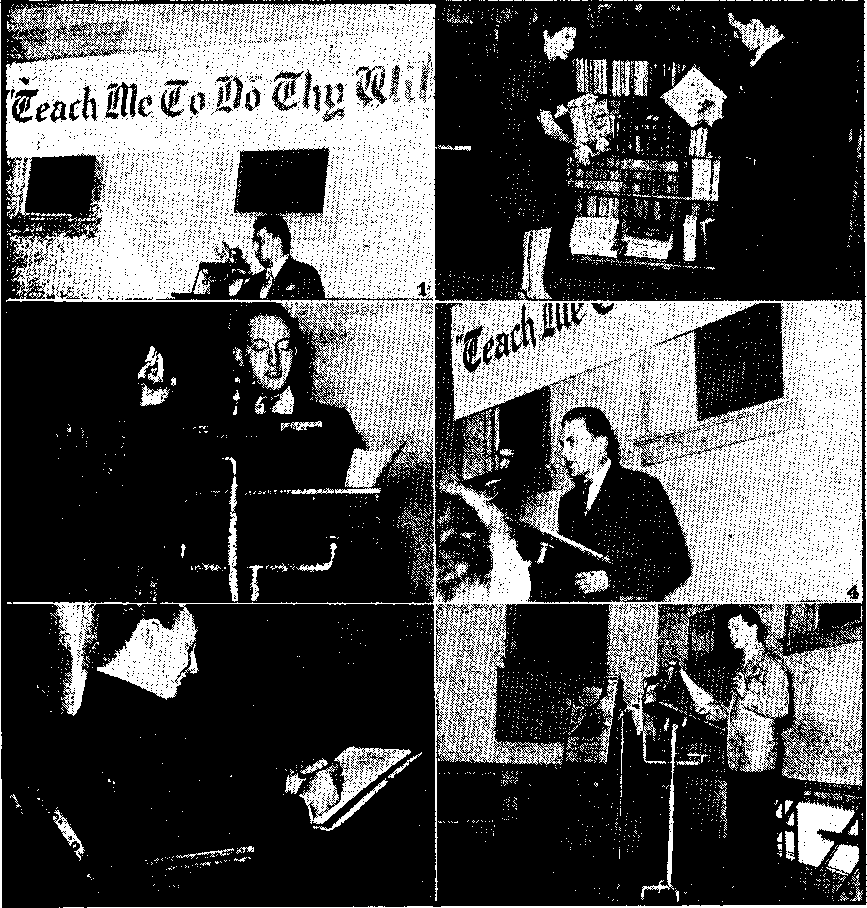

Contents
What Is Back of Britain’s Impasse in Greece! 8
iTerriNe Plight of Hungarian Jews . *
-Fixing Up Arms, Legs, and Wrists
Demons Oppose Necessary Surgery
„“Thy Word Is Truth”
“Teach Me to Do Thy Will” (Illustrated)
Jerome and Challoner and the Vulgate
Presenting “This Gospel of the Kingdom”
Practical Illustrations of Talk Conclusions 29
The Dawning of the Better World
Published every other Wednesday by
WATCHTOWER BIBLE AND TRACT SOCIETY, INC.
117 Adams St., Brooklyn 1, N. Y., U. S. A.
OFFICERS
President N. H. Knorr
Secretary W. E. Van Amburgh
Editor ! Clayton J. Wood worth
Five Cents a Copy
$1 a year In the- United States '
$1.25 to Canada and all other countries
NOTICE to subscribers
Remittances: For your own safety, remit by postal or express money order. When coin or currency la lost in the ordinary mails, there is no redress. Remittances from countries other than those named below may be made to the Brooklyn office, but only by International postal money, order.
Receipt of a new or renewal subscription, will be acknowledged only when requested. Notice of Expiration Is sent with the journal one month before subscription expires. Please renew promptly to avoid loss of copies. Send change of address direct to us rather than to the post office. Your request should reach us at least two weeks before the date of issue with which It is to take effect. Send your old as well as the new address. Copies will not be forwarded by the post office to your new address unless extra postage is provided by you.
Published also in Greek. Portuguese, Spanish, and Ukrainian.
OFFICES FOR OTHER COUNTRIES
England 34 Craven Terrace, London. W. 2
Australia 2 Homebush Rd., Strathfleld, N. 3. W. , South Africa 823 Boston House, Cape Town
Mexico Calzada Melchor Ocampo 71. Mexico, D. F. Brazil Rua Llctnio Cardoso 330, Rio de Janeiro Argentina . Calle Honduras 5640-48, Buenos Aires Entered as second-class matter at Brooklyn. N. Y., . under the Act of March I, 1878.
Coughlin’s ‘Disgraceful Behavior’
♦ Arnold Lunn wrote to the London Catholic Herald giving them two instances of Father Coughlin’s disregard of ■ truth and honesty, and his column-long letter was published with the editorial comment, “We entirely agree that such political behavior as this is disgraceful, and peculiarly disgraceful in the case of a priest.”
In the one instance Coughlin purported to quote a 67-word telegram hut merely quoted the last 19 words of it in such a manner as to make the message seem to say something which the message itself shows was not in the mind of the sender at all. Of the other instance Lunn says:
Fr. Coughlin may be incapable of conscious falsehood, ifor he never tells a lie on purpose or the truth except by accident, He began by assuring me that six Spanish bishops had been expelled from their sees because they were Masons. I asked him for his authority for this statement. He replied, “The Spanish ambassador.” “I know Senor Cardenas,” I replied, “and I hope to see him in Washington.” “I do not mean Cardenas,” said Fr. Coughlin, 'Tie is merely a ‘front’ ambassador, a facade ambassador. Franco’s real ambassador is a Franciscan priest, and it was he who told me about the six bishops.” What is your judgment on the veracity of a priest who quotes the Spanish ambassador as his authority and, when challenged, replies in this vein?
Deeds of Kindness Well Repaid
♦ In the Bronx, New York city, the Lorencin family were kind to a charwoman, who died recently at their home at the age of 73. They did not know that she had any money, but when she died she left them her fortune of $15,000* in cash, together with 100 shares of stock in a copper mine. The people that do kind things sometimes get paid for it, and also the people that do unkind things sometimes get paid for it. •
; -
“And in His name shall the nations hope.’’—Matthew 12:21, A.S. V. ___ ____ ’ t ■ - _ ■ _ . . .........................................................................................................................
Volume XXVI Brooklyn, N. Y., Wednesday, February 28, 1945 Number 664
A Glimpse at Yugoslavia
FORMED in the break-up of the Austro-Hungarian empire, at the conclusion of World War I, Yugoslavia, with its 95,558 square miles, is a little larger than the combined states of New York and Pennsylvania, and, with its 16,200,000 inhabitants in 1940, it has or did have a larger population than is found in those two great states, provided only that New York city is omitted from the total. The people are mostly farmers.
There are estimated to be about 1,000,000 Yugoslavs in the United States. They are well scattered here, and in their native land, which stretches some 550 miles along the eastern shores of the Adriatic sea, and from there half that distance over the Dinaric Alps into the valley of the Danube. The Serbs, described as “dour, uncompromising and brave”, occupy the southeastern part of the country and in 1941 numbered 8,268,108, or just over half the population. There are 6,785,501 Greek Orthodox Catholics in Yugoslavia, and these are mostly Serbs. Their alphabet, styled Cyrillic, is composed of 38 original Greek letters with 10 letters later added, and which is the alphabet of Russia also.
The Croats, described in Leigh White’s book The Long Balkan Night as “cynical and opportunistic”, intermingle with the Serbs in normal times, but live mainly farther north and west. Their number in 1941 was 3,575,894. A large share of Yugoslavia’s 5,217,910 Roman Catholics are Croats, and, though their speech is much the same as that of the
FEBRUARY 2B, 1945
Serbs, they use the Latin alphabet in their written language. The never-ending strife between the Serbs and Croats is not so much due to their different alphabets as to the always tyrannical troublemaking priests in their lust for power. The Croats are priest-ridden.
The Slovenes, numbering 1,246,228,, live at the northern end of the country' and are almost solidly Roman Catholics. They use the Latin alphabet. Scattered around among the Serbs, Croats and Slovenes are 2,605,000 Hungarians, Rumanians, Albanians and Turks. In this latest aggregation are included most of the 1,561,166 Mohammedans, 231,169 Protestants and 68,405 Jews that go to make up one of the very intelligent but strife-ridden countries of Europe.
Yugoslavs Appreciate Education
Governor Lausche of Ohio is of Yugoslavian parentage, and of the famous Yugoslavian Nikola Tesla it has been said (and with some degree of heroworship, it must regretfully be admitted) :
Were we to eliminate from our industrial world the results of Tesla’s work, the wheels of industry would cease to turn, our electric trains and cars would stop, our towns would be dark, our mills and factories dead and idle. So far-reaching is his work that it has become the warp and woof of industry. Should Tesla’s work be suddenly withdrawn, darkness would prevail and we should slip into barbarism.
Cutting out the oratory and getting down to facts, Tesla was the first to conceive an effective method of utilizing the
3 alternating current, and devoted his long and useful life, not to making money, but to blessing mankind with new and efficient forms of dynamos, transformers, induction coils, condensers, incandescent lamps, etc. At 80 years of age he died in relative poverty in a New York hotel.
At the northern end of the Adriatic sqa Yugoslavia and Italy meet, and the r young folks meet and intermarry, with the usual results. The Yugoslavs claim that they now have 650,000 big and little ' "Yugoslavs in Italy and that they are not ' being fairly treated in respect to education, and that this is especially true in Istria, the peninsula that juts out into the Adriatic between Trieste on its western flank and Fiume at its east at the .extreme upper end of the sea. The particular point of displeasure is that when the Italians have, by superior strength, seized Yugoslav territory, they have compelled the little Yugoslavs to either be educated as Italians or not be educated at all. The queen of Italy promised to remedy this, but by the time it got around to Mussolini the answer was No.
The Catholic Kingdom of Croatia
The Boman Catholic Hierarchy never hesitates to honor a murderer who is one big enough to grab political power, and so, when Hitler was overrunning Europe in the early part of 1941 and the assassin Ante Pavelitch wanted to get a good name for himself by splitting Yugoslavia, it was glad to have a hand in forming the kingdom of Croatia. Pavelitch and his cronies were received by the pope and a deal was fixed up to put an Italian princeling on the throne, but, though the Italian prince Aimone was duly “elected” king, yet he never dared set foot in Croatia, and after thirty months of this nonsensical form of “rulership” Pavelitch turned the ' “kingdom” into a “republic” under the , protection of that “noble” Roman Cath' olic, Adolf Hitler. There is a definite state of war between the Allies and
Hitler’s Croatia, the capital of which was fixed at Zagreb. _
It was in March, 1941, that thejpoli-ticians at Belgrade, the capital of Yugoslavia proper, tried to get on the Jesuit bandwagon by signing a pact with Germany making Yugoslavia an Axis partner, but on the 27th of that month the boy King Peter II, born September 6, 1923, rose at 2: 30 in the morning, overthrew the regency that had done the job, and ascended the throne. Then trouble began in dead’earnest. On April 6, 1941, Germany’s armies invaded the country; six days later Hungarian armies invaded the country, and subsequently Italian, Bulgarian, Rumanian and Albanian armies also invaded the land and, with the exception of the Rumanians, each engaged in burning, destroying and massacring. King Peter had to light out, first for London and then for Cairo. At the latter place, July 31, 1943, he announced his engagement to Princess Alexandra of Greece, one of the greatgreat-granddaughters oWueen Victoria, and, boylike, he wantSPfo get married right away, and did (March 20, 1944). Wiser heads had suggested to him that he wait a while and see how his king business was going to pan out. But youth knows it all, or thinks it does; and Peter is young. Recently, he tried to grab the throne willy-nilly.
IFar Accentuates Every Trouble
War accentuates every trouble, as may be discerned from the following extracts from the August, 1943, issue of the London magazine The Nineteenth Century and After: .
The Croats, who were liberated from the domination of the Habsburgs by the Allies (including Serbia) in the last war, are now the most ruthless of their enemies. The Croats are Roman Catholics and inclined to clericalism and religious intolerance. Whereas the Serbs, as a whole, were strongly in favor of France and Great Britain, the Croats, some of them willingly, others under duress, were for close association with Germany.
The Croat policy has been to massacre, deport, or convert the Serbs, Conversion, from Greek Orthodoxy to Roman Catholicism; has had little success. The number of those who have been massacred runs into hundreds of thousands, 600,000, according to one careful estimate. The massacres have been accompanied by bestial cruelties. Ustashis [Croatian militia] gouged out the eyes of many of their victims and carried the eyeballs on strings or in bags, to sell them as mementos.
The Slovenes are Roman Catholic and there is, amongst their clergy, considerable hatred of Greek Orthodoxy.
The entrance of the German, Hungarian, Italian and Bulgarian armies into this situation did not help it any. At hand is a brief dispatch to the New York Times published February 13, 1943:
Ankara, Turkey, Feb, 12. Yugoslav quarters said tonight that 27,000 persons suspected by the Germans of being in sympathy with the Yugoslav patriot, General Draja Mikhailo-vitch, have been executed in Belgrade alone since last September. Three hundred were shot Dec. 24 at Belgrade, and 3,000 were put to death at the village of Jajinci on Christmas Day, they sfid, adding that mass executions of hostages were taking place throughout Serbia.
Racket Operators Should Be Interested
Those that are helping to operate the Christmas racket should be much interested in the dispatch just quoted. They are the same ones that made that concordat with Adolf Hitler and so gave him the go-ahead sign. They are represented as weeping themselves to death over the whole business, but their pictures show them smiling and happy. Here are a few more gems that should help, these yarns about papal sobs:
Belgrade, Nov. 18. (CP-Reuters) (Special to the Vancouver Daily Province) Of the 12,000 Jews in Belgrade before the war only some 20 remain alive in the city. Only about 1,000 escaped. In July, 1941, the scientific extermination of the Belgrade Jews began. A meeting of all Jews was called in the center of Belgrade. They were ranged up according to profession. Every fifth man in each group was taken to the Janitza rifle range and shot. Every time a man was killed in Belgrade, 200 or 300 Jews were called up by the police. The next day their clothes were sent back to their relatives. When men became scarce, women and children were ordered to present themselves, bringing the keys of their flats, with their names and addresses. The women and children were then driven off in lorries to Zemun. Although they knew they were going to certain death they sang as they went, Serbian women in the streets wept.
The women in Belgrade camp were driven by day to Zemun airfield to clear the snow from the runways. Every morning 50 to 60 corpses were carried off from this camp. Drunken soldiers entered the camp in the middle of the night and ordered the women to dress. They were made to bow before gallows and ordered to say prayers. Then after hours of agony they were told, “We shan’t hang you tonight.” Later the Germans brought to tbf camp a closed and sealed lorry with the exhaust pipe leading into it, packed it with Jews and drove it to Janjutza. When the doors were opened only corpses fell out.
More Sob Material
In its issue of October 17, 1943, the Sunday News carried a story by the United Press entitled “30,000 Hostages Slain by Belgrade Torturers” in which a Belgrade physician who had escaped to London declared that Belgrade’s torture chambers are the most diabolical in Europe; and here is something for the public and professional sobbers:
Bodies frequently were strung up from the capital’s lampposts, he said, and some persons have been crucified, nailed alive to their own doors.
Outside of the sobbing fraternity anybody with, any knowledge of history and with even a very little bit of common sense will recognize in these historical facts a replica of the Crusades and Inquisitions.
On December 25, 1942, Pavelitch’s journal Nova H.rvatska shamelessly boasted how the Croats betrayed the Serbs to Pacelli’s friend Hitler:
, The Serbs say now that it was the Croats ivho betrayed them. They are quite right. {The Croats admit betraying the Serbs.] . They [the Croats] took care that nothing was in order, that during the battle nothing was ’ in its place . . . that nothing went the right way, that no one was correctly informed. . . . -The Croats disobeyed orders, wrecked communications, spread panic, purposely missed the target, destroyed tanks and guns. . . . The Croats were the only people in this war who . . . destroyed the Balkan battlefield from ^inside while the German army fought outside.
What the Croats could not do on the inside of the battle lines the Germans did with characteristic efficiency and cruelty;
Twelve Germans were killed outside Kra-gujevats. The German military massacred 4,600 people by way of reprisal. Amongst the victims was an entire school. The boys, with their masters, vrere marched off, ranged against a wall and shot. Some of the smaller boys hardly realized what was happening, . others, in fear, held their copy-books in front of their faces in a pitiful attempt to ward off the German bullets. The Jews and the inoffensive Gypsies were exterminated throughout Yugoslavia, most of them in the gaschambers usually employed to destroy lice.
The Italians took a hand also. On this aspect of the subject Paul B. Anderson, a former Y.M.C.A. secretary engaged in European work, wrote in the Episcopal weekly Living Church:
Terror and massacre indescribable were suffered by tens of thousands of Serbian Orthodox residents in the territories torn from Yugoslavia by the Italians. , . . Regretfully one must mention the un-Christian condoning and even stimulation of these excesses by the Roman Catholic hierarchy and clergy in this area. Reports claim as many as a million of these Orthodox Serbs have now been massacred or driven from Croatian territory.
This Was Not Trouble Enough
This was not trouble enough. The pinnacle was reached by the bitter backbiting and quarreling between Mikhailo-vitch and Tito, both of whom have kept this office flooded with printed matter and circular letters abusing one another and claiming all credit for themselves and all possible discredit for the other in their fight against their common enemy, Germany and the Roman Catholic Hierarchy. .
Both Tito and Mikhailovitch have each claimed that he has 250,000 fighters and each has claimed that the other has but a handful. It is reported that each has resorted to conscription and that both are fighting the Germans and the Croats, and also fighting each other. King Peter’s ,crowd has denounced Tito’s crowd as impostors. Peter himself tried to make peace between the two men. He has some sense.
Tito’s spokesman in Afnerica, Louis Adamic, says that Tito’s cause is “a people’s rising against their diverse enemies, foreign and domestic”, and that “for my part I don’t want to be united with people who are for Nedich and Mikhailovitch, who think that Franco is a great and good man”. Adamic’s papers and booklets are well prepared, printed on good paper and circulated by The United Committee of South-Slavic Americans, Incorporated, with offices at 1010 Park Ave., New York 28, N. Y. Of this organization Adamic is the president.
Mikhailovitch’^ spokesman in America _is The American Serb, published by the Serbian National Defense Council of America, 185 North Wabash Ave., Chicago, Ill. It claims that Adamic is a Slovenian immigrant. This is no disgrace. It also says that he is “a well known Communistic spokesman with key men in many government departments”. This is his right. Rather oddly, Adamic gives the names of 35 Serbs that are backing him up (5 of them have “Rev.” before their names and 2 of them “Dr.”) but The American Serb gives no names. It does not even name an editor.
The Agreement on Tito
It has evidently been agreed between Stalin and Churchill that they are backing Tito’s cause, and not Mikhailovitch’s. It is Uncle Sam’s duty to let European peoples decide their own form of government, and in this case it is Mr. Stalin and Mr. Churchill that do the deciding, apparently, for at least Yugoslavia; and, as there is no Atlantic Charter, and never was any, what is to hinder?
Josip Brozovich (Tito) is, oddly enough, a Croatian; and he is a Communist. If he was a Catholic he must have gotten over it. Before the Spanish war he was a metalworker, but, becoming convinced of the justice of the cause of the Spanish republic as against the hypocritical and bloodthirsty Franco and his religious associates, he helped run the underground railway from east to west by which great numbers of his fellows reached Spain and engaged in the fight for liberty. He twice visited Mikhailovitch to try to settle their differences and arrange for a unified command, but Mikhailovitch refused to go along. '
The next step was to get in touch with the British. This was not hard, and early in 1944 Winston Churchill’s son, Randolph Churchill, landed by para-1 chute in Yugoslavia, and since then British and American supplies have been literally falling into his hands. The dropping is done at night, the locations being indicated by huge bonfires built for the purpose.
There have been terrible hardships in Tito’s campaigns. The first hospitals were beds in peasant cottages, often surrounded by pigs and other domestic animals roaming at large; the only antiseptics, salt and water; the dressings, of old linens; amputations, by hacksaw; the wounded often had to flee or have their throats slit. Instances were of record where the wounded were en route from three weeks to three months before they could have adequate attention. In one instance Tito’s headquarters were seized and he and Major Churchill had a tight squeeze making their escape.
The New Republic speaks well of Tito’s provisional government, saying of it that it “is popular, democratic and representative” and that:
The president of the Provisional Government, Dr. Ivan Ribar, has been a revered democratic leader in Yugoslavia in whose new government after the First World War he participated prominently as chairman of the constituent assembly. All the other members of the Partisan [Tito] government are well known figures inside Yugoslavia, mostly of middle-class origin, a high-eourt judge, a newspaper editor and a priest. They represent all Yugoslav nationalities on an equal basis, including Serbs, Croats and Slovenes, as well as the country’s colorful religious life, the Greek Orthodox and Roman Catholic Churches, Judaism and Mohammedanism.
The published pictures of Tito show him as having large perceptives, a large straight nose, which, to some, indicates that he is powerful and aggressive without being either cruel or weak, and he wears an expression of sadness. The Nazis have offered $50,000 for him, dead or alive. Life magazine says he gives the choice victuals to the privates and puts the officers at the second table. That Russia is the sponsor of Tito is selfevident from the fact that both Adamic and Tito are admittedly out-and-out Communists and officers in the Communist organization.
TIE Nazi conquest of Greece brought that ancient land untold misery, but it also resulted in their getting rid of an unwanted king, at least for a time. The 'king, however, had no intention of re, gaining away indefinitely. He would return .when the coast was clear. The ' Greeks for the most part did npt like their king. Not much. He had been re. ■- ~ instated in power by a ruse, after ■* promising to conduct a fair plebiscite, and then had imposed a dictatorship upon the Greek people which lasted for years. No wonder they were not particularly anxious for his return after the departure of the Nazis.
In' August, 1943, the underground movement in Greece sent its representatives to Cairo to insist that the people must decide by vote whether the king should be allowed to return. Prime Minister Emanuel Tsouderos, of the Greek government in exile, placed the men under arrest 1 The underground ' referred to the absent government as “the government in flight” and considered it merely the representative of the wealthy class. On March 31, 1944, a group of army officers called on Tsouderos and told him to resign. He had them jailed by British police, but had to go further by arresting hundreds of civilians and members of the armed forces throughout the Middle East. But the minister of the army concluded that the demand for the resignation of Tsouderos was backed by too many Greets to be ignored, Tsouderos submitted and nominated Venizelos to replace him, but Tsouderos would continue in office until King George II (of Greece), who was in London, accepted the resignation and approved the new premier.
April 3 over three hundred soldiers and civilians took over buildings in Cairo that had housed the Greek military staff’s offices and equipment. The crew'on a destroyer refused to sail “until a new Greek government” was formed. Other ships also revolted. The resistance lasted for three weeks, until British warships covered the ships with their batteries so that men could board the revolting ships and take over. There were some pitched battles, resulting in 10 killed and 43 wounded. The resistance then gave up. About the same time there was trouble in camp of the First Brigade of the Greek army.
After the uprising the Greek government held a conference with the leaders of the underground groups and promised to include them in the cabinet.
Conditions in Greece
Greece is in bad condition. The Nazis destroyed 3,000,000 acres of standing timber, 100,000 homes, and 879 Greek villages. They carried off 20,000 tons of olive oil. Of 13,000,000 acres of land capable of cultivation only 5,000,000 were in use during 1943-1944.
One town, Distomeo, was completely obliterated by the Nazis, and the population, some 1,000 persons, massacred.
Of 25,000 children examined 75 percent proved consumptive.
Meanwhile the major Greek resistance groups were “expending as much energy killing each other as in killing Germans”. So said the New York Times. It stated further:
EAM, largest of the Greek resistance groups and containing both military and political branches, was castigated by Foreign Secretary Anthony Eden in the House of Commons last week for threatening Greek unity by its failure to fill the governmental posts assigned to it in Lebanon.
The EAM, however, refused to join the government.
As the Germans departed they ravaged the country and warned the Greeks that ten hostages would be killed in retaliation for each attack. Women and children were used as hostages. All means of transport, trucks, and even pack animals, were removed. Harbors were blocked and mined. Essential parts of factory equipment were stolen.
Nearly 500,000 homeless were left “on the doorstep” of the United Nations Relief and Rehabilitation Administration.
Inflation resulted in the issuance of bank notes in 10,000,000,000-drachnia denominations. The gold pound was worth 1,000,400,000,000 of these drachmas.
Cabinet Crisis '
' On December 2 a Greek cabinet crisis resulted over a British army proclamation disbanding guerrillas, and six ministers belonging to the- EAM (National Liberation Front) resigned. After the resignation of the six Leftist ministers tanks patrolled the streets of Athens. Forces of the ELAS (armed wing of the EAM) patrolled Athens suburbs.
The next day (Sunday) police bullets mowed down left-wing marchers in parade. A majority of the Athens’police served under the dictatorship of Premier Metaxas before 1941. Many of them were believed to have also served under the German occupation authorities! The marchers included many boys and girls.
Vlavianos, editor of the National Herald, New York Greek-language newspaper, said:
The Greek people fed strongly that disarmament of the Greek resistance (ELAS) while reactionary and royalist military units are permitted to retain their arms, is a step in preparation for the restoration of the monarchy.
December 7 an article by Wm. Philip Simms in the New York World-T elegram remarked;
The third anniversary of Pearl Harbor finds the Allies so dangerously far apart politically that unless Roosevelt, Churchill and Stalin soon remedy the situation the Axis may yet win something short of unconditional surrender. . . . Greece is an example of what is threatening Europe.
The Los Angeles Times of December 10 said, in an article “By Poly-zoides”:
Greek Situation Brings Power Polities into Open. British Want Domination in Mediterranean and Russia Demands to Be Top Dog in East. . . .
The movement of the Greek underground, known as the National Liberation Front (EAM) with its military arm of the National Army of Liberation (ELAS), sprang from the very heart of the nation. All parties, factions, groups and individuals joined in it, businessmen, lawyers and doctors, university professors and soldiers, farmers and day laborers, radicals and conservatives, atheists and bishops. And, unfortunately again, a small Communist minority more skillful than the others, more aggressive and more adept to underground operations, soon got the upper hand. . ., . Great Britain now is trying to bolster up the middle classes of Greece, to restore the dignity of the Hellenic flag, which of late had been overshadowed by the Communist standard ... If British policy is repudiated in the Mediterranean, yesterday in Italy, today in Greece, and tomorrow in Egypt, then Britain might as well write off her prestige in the Middle East and even farther east,
Churchill to Greece
The situation in Greece became such that Churchill decided to pay Athens a visit, together with Anthony Eden, who also is interested in the preservation of the British Empire. He denied, however, that he was interfering in Greece’s internal affairs. He had remarked some days before his departure that “democracy is not a harlot to be picked up on the street with a tommy-gun”. Someone else suggested that “neither was democracy a maiden to be ravished in Athens by a Tommy with a lend-lease gun”. Churchill had to back up a little and arrange to deal with those whom he had characterized as an organization of bandits and
political extremists bent upon seizing power in Athens at the point of a tommygum _ .
Well, Churchill and Eden got in such a jam in Greece that they did not know wdiat to do. (There was even an attempt ,piade to assassinate Churchill while in fthens.) They did want to help out King eorgg ,11, who is married to Queen ' Victoria’s great-granddaughter, but they could do nothing more than suggest a <- - re'gency, and picked the Greek Orthodox patriarch for the job. The resisters seem 4o have agreed to that. (After all, Stalin came to terms with the Greek church in Russia.) So the matter was submitted to King George in London, who was persuaded to submit.to the arrangement, while still holding to the forlorn hope that he will be able to return to Greece himself in due time. So Damaskinos “rules”. .
But the use of the head of the church in Greece, and of five priests on the committee that holds forth in Yugoslavia (with Stalin’s consent), suggests . that some day, not too far distant, the politicians and militarists will decide that the only thing to do is to let the pope take over for them. Then the fun will begin. -
And what is back of it? Just the desire to hang on to their soft jobs a little longer and to let the one who has always treated them with consideration help them out in the pinch. But sitting on a safety valve, or letting a “regent” sit on it, is not the best vTay to settle the present problem, though it is being tried. In this connection an extract from an article by Anne O’Hare McCormick in the New York Time.? of January 1, will be of interest. She says:
The fact must be faced that the most adventurous and idealistic youth in liberated countries is now embittered and will be easy prey for any demagogue who is ready to exploit its sense of grievance. In every occupied country young people havg been urged to fight . . . With liberation comes the command to disband, disarm, obey the law and accept the government established for them—usually by returning exiles who have not shared the experience of occupation. . . . More than lines on the map, these aggrieved and bewildered youths will make the future pattern of Europe. In dealing with them the Allied powers are dealing with the future so far with singular lack of understanding, vision or political sense.
And that lack of understanding finds its most fitting expression in the selection of Pharisaical ecclesiastics to save the day, if possible, for those who have had the lion’s share in the past and are reluctant to let go.
HUNGARY is sometimes described, and quite properly, as the center of the center of Europe. The connecting link between eastern and western Europe, and between northern and southern Europe, it has been, until now, a comparatively safe haven of refuge for Jews when pogroms have been started in countries north, south, east or west.
But all this toleration for 1,000,000 decent and useful citizens disappeared in March, 1944, when Hitler seized the - country. Forthwith, the so-called ,cNu-remberg laws” went into effect and Jews were barred from employment, as domestics and in the public services and professions. If one of a person’s grandparents had embraced the Jewish faith, a man could no longer be an attorney or a state or civic employee. ‘
By midsummer, it was generally believed, another million Jews in Hungary would be exterminated, thus bringing to 6,500,000 the number that Hitler had caused to he done to death in the most fiendish fashion. By July ’it was estimated that 400,000 Hungarian Jew’s had been turned over to Hitler and
a± least 100,000 of them slain, the beginning of the end. It is claimed that of Vienna’s 150,000 prewar Jews only 180 are yet alive, and that of Germany’s 600,000 Jews only 5,000 are left.
Of these present and prospective murders Freda Kirchwey says in The Nation (August 26,1944):
Done in cold blood, on a scale more impressive than any battlefield can equal, in centers specially constructed for extermination, this systematic murder of a race is with-■ out example in history. It is too vast and too terrible for the normal mind to grasp; indeed, this is its protection. People react with anger to individual acts of cruelty; they hardly react at all to the impersonal horror of mass murder.
The planned, systematized slaughter of Jews has now been going on for two years, but not even during this period has the tempo of rescue been speeded up. Instead, our government and the British have called conferences to discuss the problem, have set up committees, have issued warnings and appeals. And the Nazis have gone on killing Jews at the rate of about 12,000 a day.
Miss Kirchwey explains that the government that Hitler now has operating Hungary would be willing to spare children under ten years of age, or other Jews who Can obtain British certificates of admission to Palestine or who hold valid visas for other countries. But, as a general rule, most Jews in Hungary are to be exterminated.
SOME of the skulls of humans who lived thousands of years ago had been trephined, and the bones had healed. The Hindus, centuries before the birth of Christ, knew how to develop a new nose by flaps taken from the forehead. Surgical instruments were recovered from the ruins of Pompeii. Throughout the Dark Ages the practice of surgery was abandoned to barbers and bonesetters, and it was not until about the year 1650 that the world had a surgical college, in France.
During the nineteenth century, with the introduction of anesthesia by the use of ether, etc., the death rate in major operations dropped from 66 percent to 6 percent; which speaks for itself. In other words, the patient had eleven times as good opportunity of coming off from the operating table alive. Sterilization of instruments, trained nurses, rubber gloves; aseptic dressings, immaculate cleanliness, marvelous hospitals, improved instruments, and countless other things, have constantly made for better surgery. The X ray often shows just what must be done to heal a fracture.
• Those who instinctively fight shy of cutting the human body, and there are many such, may get some help and comfort from the fact that ants will amputate the broken limb of one of their number. Those that perform the operation on their comrade know very well that he would rather have six legs than ^o have five, but they figure that it is a nuisance to him to have five and a half legs, since a half leg is no leg at all and is really in the way.
Some Recent Steps
It would have been a pleasure to make that headline read “Some Recent Steps Forward”; but the surgeons cannot always be sure that the newest things will be the most successful. Their motto is, “Be not the first by whom the new is tried, nor yet the last to east the old aside”; and it seems like a good motto. A good surgeon has to keep reading and studying and “practicing”, with perfection always out of reach.
Glass filaments have been used in making sutures with which to sew up wounds. The claim is made that the glass is better
FEBRUARY 88, 1M5
11
than catgut or silk, which may provide a breeding place for germs, and better than stainless steel or silver wire, which latter have tendencies to crawl about through the tissues. The glass sutures used are composed of 204 invisible fila-r ments, each only 22/100000 of an inch i thick.
* The Russians are reported to be ob-v tainirig remarkable results from hermetic plastering of injured parts, with' / ~ consequent complete healing where ■■ i amputation would formerly have been
. required. Another thing that has brought astonishing results is the feeding of patients while they are on the operating table and the operation is under way. Dr. Henry E. Sigerist, professor of history of medicine, Johns Hopkins Uni-vetsity, explains:
A tube is inserted in the intestine while the patient is on the battalion field hospital operating table. A meal of milk, butter, eggs, sugar, salt and distilled alcohol—the ingredients Of eggnog—is introduced. When natural milk and eggs are not available evaporated milk and distilled water are used. Often the beneficial results of the nourishing meal are apparent immediately. Often color returns to the wounded man’s cheeks, his lips become red and warm and often he falls asleep at the end of the operation.
The Associated Press carried a description of a new method of fighting burns by skin-grafting. Four safetyrazor blades fit into a holder; a screw sets the depth of the skin to be cut; the skin is stretched taut; large grafts of uniform thickness can be cut to pattern and there is little bleeding. This AP dispatch was from Baltimore, and followed by a day, from, the same city, the announcement that one of the Johns Hopkins surgeons had developed a tough and translucent film of medicated cellulose which can be used to shut out infections. The bandage is paper-thin, and pliable, and slightly elastic. Sheets of any size may be made by spraying the emulsion on a smooth surface and allowing the film to dry.
Brain and Spine Wounds
Word leaked through from Berlin, some time back, that brain and spine wounds that would have been hopeless in World War I are now healable. In a certain re-educational room at that limp were eighty men who were being taught like children to read, write, and count; men who had lost one hand were being taught the use of the other, and it was hoped to reinstate some of them in civilian life.
Surgery gives one the creeps, anyway, and so, particularly, it is hard to wax enthusiastic about the pumping of diiodotyrosine-gelatine into a man’s head, to see, by photographs, if he has any tumors or bullets or other things on his brain, or in it. But the surgeons say that they tried it on forty-four eases without harmful effects, and found that it was absorbed in the blood stream and gradually excreted. Maybe it is necessary sometimes. This is just telling about it; that’s all.
Worse and more of it is the statement in the Soviet- War News, published by the Russian Embassy in London, that nerves have been successfully transplanted from corpses into living bodies. Thus, one of the Red army commanders had an arm so torn that a section of the main motor nerve was missing. The nerve was replaced with one taken from a corpse, and the commander made a complete recovery.
It used to be thought that deterioration of the brain sets in about eight minutes after the heart stops beating; but in a Boston hospital the surgeons-kept the brain of a man who ceased breathing during an operation plentifully supplied with oxygen while they manipulated the heart for twenty minutes. The patient left' the hospital in good condition sixty days after the operation.
Wounds in the Heart
At Astoria, N. Y., a 14-year-old boy, Joseph D’Agostino, was “playfully”
CONSOLATION
stabbed in the heart by a playmate who lunged at him with a knife. Joseph was rushed to a hospital, sections of the third and fourth ribs were removed, and the knife wound was closed with two silk stitches. Joseph was expected to recover. Name of the playmate was withheld.
In a Harlem, N. Y., street, after midnight, a youth of 19 was found with a stab wound in his heart. Tie was rushed to a hospital. At 12:45 Dr. Finestone was reached at his home in Far Rockaway (over twenty miles distant) and was asked to rush to the hospital quickly in an effort to save the boy’s life. It was the night of a tremendous downpour of rain, but Dr. Finestone started. Traveling at high speed through the city streets of Brooklyn and New York city, he was shaken and bruised when his car. skidded and almost overturned. He arrived at the hospital in *45 minutes from the time he started, and immediately proceeded with a delicate operation requiring two hours. Six stitches were made in the patient’s heart. Three hours later the young man, who had been placed in an oxygen tent, recovered consciousness and demanded to know where he was and what had happened. He had been attacked by three thieves, but they became frightened and ran, leaving him with $118 in his pocket. It was a wild night for surgeon Finestone.'
With a bullet in his heart, Lloyd Landis, Coatesville, Fa., goes to work as a construction worker. Accidentally shot, a surgeon deftly pulled together the damaged outer wall of the lower part of the heart, and sewed it shut over the bullet. He did not extract the bullet for fear Landis would bleed to death before the wound could be closed.
Two surgeons at the meeting of the American Medical Association, at Atlantic City, claimed to have greatly relieved angina pectoris ’ (neuralgia of the heart) by inserting two teaspoonfnls of talcum powder in the space between the heart muscle and its outer envelope. The operation takes less than an hour, FEBRUARY SB, 1945 relief comes promptly, and in six weeks the patients are back at work. The first patient thus treated remained well thereafter for several years; so said the surgeons.
Magnets Have Been Used
Magnets have been used in surgery; not much, perhaps, but some. In New York city a woman 23 years old thought she was tired of living, and stabbed herself with a 2|-inch needle. The needle went into her heart; but she continued to live on, and, after a while, concluded she had made a mistake. The surgeon found the* needle, using an electronic device to do so; then he removed it, and the woman recovered.
The electronic device last mentioned is designed to locate small pieces of metal in the body by'means of electromagnets. It is a wonder it was not invented sooner. A so-called “finder”, in the form of a pencil, is moved over the wounded area, foreign bodies are attracted and recorded on a dial, and when the maximum attraction is reached the surgeon knows where to look for the metal. The size is determined by X-ray. This device was used to great advantage in the treatment of the wounded after Pearl Harbor.
In the summer of 1943 a 5-year-old boy in Brooklyn swallowed an inch-long lock. Why a boy should want to swallow a padlock is something that only a boy can explain; but, anyway, he did it. There was big excitement in the family; the parents got in touch with their physician ; the physician got in touch with the General Electric Company; they made a special magnet and the vice-president of the company flew with it to New York; the doctor attached the magnet to a stomach tube; the boy swallowed the tube; the lock came up into his esophagus; and there a surgeon of the Jewish Hospital of Brooklyn seized the lock’s hasp with an instrument and pulled it out. What an odd kind of thing a boy is, anyway!
Fixing Up Arms, Legs, and Wrists
Where surgery specially shines is in fixing up arms, legs, and wrists. There is a new freezing technique which is saving many wounded limbs. When a leg has been wounded it is not circulation that the leg wants; it is rest, quiet, this is best obtained by a freezing process which decreases the metabolism v of the’wounded member until the blood is able to circulate again and the leg i$ saved.
rt ~ New kneecaps are now made of ten’ dons taken from the patient’s thighs.
* A new transparent plastic, prefabricated to the general shape of the wrist, when placed in, hot water softens enough to be molded to a broken or sprained wrist; it then hardens and stays hard.
Although this keeps the wrist immovable it permits the use of the fingers for writing and other light tasks.
At Toronto a boy smashed into a streetcar with a motorcycle and left on the pavement one leg bone six inches long and a smaller bone. Boys are like that. Police picked up these spare parts and asked the Toronto Military Hospital if they wanted them. They did, because they already had most of the rest of the boy. They put the bones in the refrigerator for ten days, then they boiled them and put them back into the boy, and he recovered and walks again. But boys shouldn’t scatter themselves around over a city like that and expect to be as good as new. It is astonishing how much they can stan^d.
ONE day this week while I was taking dictation a' letter was given to me which shows a few steps the demons have taken to cause suffering of an innocent child. This particular case is that of a little girl who has bowlegs as a result of rickets. Her sister had previously been afflicted in the same manner, but after treatment at the hospital, adequate diet and surgery, her legs were straightened, with excellent results. The subject of this letter was also scheduled for surgery of the same type. This is a simple operation and not at all dangerous. However, the following information has come to our office after an interview with the mother. I may add that the recommendation for surgery was made three years ago and the mother then was willing.
Now the visitor reports: “Nearly three years have elapsed since the first report of divine answers concerning Betty, and the mother is still firm in her belief that it is the divine will that Betty must not receive surgery. Mrs.------believes in
the efficacy of prayer and depends upon it for all personal needs. Another child was threatened with tuberculosis at the
age of 11. The mother has had Elder Johnson and others pray for her and she is very much better. Her mother says that she has bronchial asthma. Mrs. ------prays about every event or decision concerning the family and, of course, prayed often about Betty. It seemed that her answer was always 'No’ when she prayed about having surgery performed on her. On one occasion while on the way to the hospital, at which time Mrs. •——— expected the hospital to keep the child for surgery, she prayed that the Lord would help her with the decision and, if Betty should not have surgery, that some way be made to permit her to return home. Mrs.------
said the Lord worked through the doctor and he did not keep Betty for surgery that day. [She probably had a runny nose.] Another time, as she was approaching the hospital with Betty, a voice fold her it was wrong and that Betty should not be treated. Therefore she turned around and came back home. She consulted Elder Johnson about the matter and he agreed that they should pray only and not permit surgery.
“Mrs. -—— felt a little uneasy, for fear she was depriving Betty of benefit, sp asked the Lord to tell her what would happen if she permitted surgery for Betty. Immediately she saw a vision of Betty on the operating table and she was dead. Then she knew she should never permit surgery. Another time Mrs.------was uneasy about the deci
sion made and felt she needed additional proof in favor of it. Many of the sisters had spoken to her about Betty, but no brothers had given an opinion concerning her. So Mrs. ----------- prayed that if
she was right in her decision against surgery the Lord send three brothers to speak to her about it. The next time she went to church, before she had been there ten minutes, three brothers came to her and told her never to permit surgery for Betty. The mother is quite certain that Betty vyill overcome the bowed defect through proper diet and prayer." (I don’t think she will: her family history records two uncles who are achondroplastic dwarfs whom proper treatment would have much benefited.)
It is too bad for Betty, because chanctes are that the demon which always says “No” will be too busy with his many other affairs of meddling to take time to straighten the child’s crippled legs. Betty is only four years old and surgery should be done now to be effective. When Betty gets old enough to think she will hate the “God” wdio refused to let her become like other girls because He ‘didn’t have the power to preserve her life on the operating table’.
I told the woman who was dictating the letter that it was sheer demonism, but she said that some people had peculiar beliefs, no doubt, and that neither logic nor reasoning could sw’erve them and that no matter how peculiar we thought they were they were still entitled to do as they saw fit.—Lorraine Pyles, Indiana.
CALLING attention to the fact that there are now a half million Negroes in New York city, and that their opportunities for employment are limited, James H. Hubert, executive director of the New York Urban League, in an address reported in the New York Times, declares that Negroes make up 25 percent of the city’s relief load, and that the chief offenders who discriminate against these unfortunates in the matter of giving them jobs are the big insurance companies, the department stores, and the public utilities. Shame on them!
It isn’t only in Germany that the Negroes are treated unfairly. Maplegrove Cemetery, Kew Gardens, Queens, refused to let a maid be buried in the plot of a mistress she had served faithfully for thirty years. Do you blame the mistress for being indignant? At White Plains, also in New York state, a 15-year-old Negro schoolgirl was awarded $300
FEBRUARY 2B, 1945 damages for expulsion from a skating rink solely on account of her color. The mistress who wished to bury her faithful maid in her own lot should drag the administrators of the Maplegrove Cemetery into the courts to see if they can get away with this act of narrowmindedness at this time.
The Committee for a Jewish Army carried a full-page advertisement in the New York Times, offering 200,000 Jews willing to fight for the Allies on any battlefront, and backing up the offer with a list of 133 American and Palestinian statesmen, educators, editors, authors, journalists, attorneys, scientists, surgeons, actors, radio commentators, motion picture producers, builders, admirals, composers, sculptors and architects acting as a committee, that could not fail to impress any fair-minded man with the high purpose, sincerity and ability of the announced aim.
15
ft
AT Isaiah 42:1, 2 it is prophesied: _ “See! my servant, whom I uphold; my chosen one, in whom.1 delight. I have put my spirit upon him, He shall bring * forth justice to the nations. He shall not cry, nor shout, nor make his voice heard in the streets.” (Smith-Goodspe.ed Bible Version) This prophecy has been applied against Jehovah’s witnesses as proving unscriptural their field activities, and especially standing upon the street corners and sidewalks offering to passersby the magazines The Watchtower and Consolation. The question, therefore, arises, Is their Christian activity in this way for publishing the message of God’s kingdom Scriptural or not? ,
The determination of the answer depends upon the meaning of the expression, “He shall not . . . make his voice heard in the streets.” The reference here is plainly to the chosen servant of the speaker Jehovah God, who is delighted by the servant’s course of action and who upholds Him for that reason. We are not left to guess as to tile identity of this chosen “servant of Jehovah God, for Jehovah’s own inspired Word plainly identifies the servant for us. We can therefore searchingly scrutinize the activities of Jehovah’s chosen servant and see whether ‘not making his voice heard in the streets’ meant that he did not serve God with his voice in the broad and open places of cities and the countryside. Guiding a consecrated Jew by His inspiring holy spirit, and which Jew was a faithful follower and close watcher of Jehovah’s servant, Jehovah God caused him, the apostle Matthew, to write the following:
16
“But the Pharisees deft the synagogue and consulted about him, with a view to putting him to death. But Jesus knew of this, and he left that place. And numbers of people followed him about, and he cured them all, and warned them not to say anything about him—in fulfilment of what was said by the prophet Isaiah, ‘Here is my servant whom I have selected, My beloved, who delights my heart! I will endow him with my spirit, and he -will announce a judgment to the heathen. He will not wrangle or make an outcry, and no one will hear his voice in the streets; he will not break off a bent reed, and he will not put out a smoldering wick, until he carries his judgment to success. The heathen will rest their hopes on his name!’ At that time some people brought to him a man blind and dumb, who was possessed by a demon, and he cured him, so that the dumb man could speak and see. And all the crowds of people were astounded, and said, ‘Can this be the Son of David?’”—Matthew 12:14-23, SmithGoodspeed.
An inspired writer of Jehovah God thus points the finger straight at Jesus Christ as the chosen servant foretold by Jehovah’s prophet Isaiah. When Jesus left the synagogue, as above stated, and the people followed Him about and He healed their sick and infirm, can it be claimed that He was not in the open and public places and His voice was not heard in the streets informing the people about the kingdom of Jehovah God? The variety of preaching operations of Christ Jesus is too well known by Bible readers to deny that on this mentioned occasion and on other occasions throughout the three and a half years’ ministry among the Jews, His voice was never heard in the streets. Preaching in the streets does not undignify God’s Kingdom-message. In the book of Proverbs Christ Jesus is personified as wisdom, God’s wisdom; as it is written: “Christ Jesus, who was made unto us wisdom from God.” (1 Corinthians 1:30, Am.
consolation
Stan. Ver.) Hence, as wisdom personified, chapter eight of Proverbs says of Christ Jesus: “Doth not wisdom cry? and understanding put forth her voice? She standeth in the top of high places, by the way in the places of the paths. She crieth at the gates, at the entry of the city, at the coining in at the doors. Unto you, 0 men, I call; and my voice is to the sons of man. , . . The Lord [Jehovah] possessed me in the beginning of his way, before his works of old. I was set up from everlasting, from the beginning, or ever the earth was. . . . Then I was by him, as one brought up with him: and I was daily his delight, rejoicing always before him.”—-Proverbs 8:1-30. .
If it was unpleasing to the Lord God and contrary to His Word for the gospel to be presented and preached on the streets, then wisdom would never be personified as crying out God’s message in such places. And yet the Proverbs of divine wisdom again picture the Son of God and His followers and imitators as there letting the Kingdom message be heard. Proverbs 1:20-33 reads: ‘Wisdom crieth without; she uttereth her voice in the streets: she crieth in the chief place of concourse, in the openings of the gates: in the city she uttereth her words, saying, How long, ye simple ones, will ye love simplicity? and the scorners delight in their scorning, and fools hate knowledge? Turn you at my reproof: . . . whoso hearkeneth unto me shall dwell safely, and shall be quiet from fear of evil.”
What, then, does prophecy mean in saying that Jehovah’s chosen Servant, Christ Jesus, would neither lift up nor cause His voice to be heard in the street ? It means that He would not be heard abroad sounding forth His own praises and magnifying himself before men for a public display. He would not thus be like the religious hypocrites, who did make their voice heard in their own praise in the streets and concerning
FEBRUARY 28, 1845 which religious self-praisers Jesus said: “So when you are going to give to charity, do not blow a trumpet before yourself, as the hypocrites do, in the synagogues and the streets, to make people praise them. I tell you, that is all the reward they -will get! When you pray, you must not be like the hypocrites, for they like to pray standing in the synagogues and in the corners of the squares, to let people see them. I tell you, that is the only reward they will get!” (Matthew 6:2,5, Goodspeed) This accounts for it that on many occasions Jesus charged those upon whom He performed miraculous cures not to make Him known. He preferred that the power of the truth that He preached, rather than His miraculous works, should draw men to Him as the Messianic Servant who praised Jehovah and did the divine will. —Mark 7:36,37.
However, as for publishing the good news of the kingdom of God, Christ Jesus felt free to do that wherever opportunity and occasion offered, be it even on the public street or the public squares. His apostles .and disciples imitated Him in this freedom of proclaiming God’s message. Not disobediently, therefore, the apostle Paul disputed “in the synagogue with the Jews, and with the devout persons, and in the market daily with them that met with him”. (Acts 17:17) It is therefore in full keeping with Christ’s perfect example and with all Scripture prophecy that Jehovah’s witnesses who follow in Christ’s steps should station themselves at corners and along the pavements of the streets and display and call out the educational magazines that they distribute. Thereby they are not religiously or hypocritically sounding forth their own praises, but are a spectacle unto the world, unto men and angels, in declaring the name and kingdom of Jehovah by His Christ.. Thereby they are effectively serving the Lord God in obedience to His Chief Servant, Christ Jesus; and Jehovah God is pleased and glorified.
17
TN HIS booklet about the Bible John J- Noli, of Fort Wayne, surely goes after those who think a lot of it. Tn passing it may be remarked that John Noll has a number of titles, such as “Bishop” and ?D.D.”, attached to his name; but since Simon Peter, for whom John Noll * claims * to have great respect, never made any use of titles, John himself ... cannot take offense at being treated the ; same way as the Bible treats Peter.
(There is, indeed, no record anywhere that Peter was at any time called “Bishop Simon J’eter, D.D.”, or even “Pope Cephas”, or something similar. Peter was not the type to go in for that sort (jf thing, and he probably was quite familiar with the text of Scripture that says, ‘Let me give no flattering titles unto man.’ (Job 32:21, 22) But to get right back to John Noll and his booklet.
The booklet undertakes first to tell the truth about the Bible. That’s good, if sincere. We find according to the booklet it was ‘just four hundred years from the time Tyndale [more accurately, Coverdale] published his first complete English edition of the Bible’ until John Noll decided to write his booklet. So the booklet is now nine years old, still going strong, and deserving of some attention, especially as it pretty well represents the attitude of the Hierarchy of-Borne toward the subject. The story bears the nihil obstat of “Rev.” T. E. . Dillon, censor libroruin, and John Noll’s own imprimatur.
John Noll says that the English-speaking world was celebrating the event, the publication of Tyndale’s Bible, occasionally with uncomplimentary remarks about the Catholic Church. That, of course, is quite understandable, since the Catholic Church, or its Hierarchy, did everything it could to make an end of both Tyndale and his Bible. But John Noll overlooks that little feature. After an introductory story or anecdote about the sentimentality people feel for the Bible, Noll turns to the Encyclopedia Britannica, from which he selects the story that Pope Datnasus ‘ordered’ St. Jerome, the greatest linguist and Biblical scholar of his times (?), to gather the approved books together and translate them into Latin. Just how the “Bishop” of Rome “ordered” Jerome to do this is not made clear, but it was probably along the lines of the manner in which a pope might now order Sears, Roebuck & Co. to provide him this or that. The past can always be colored by the present, and at great distances outlines are blurred. It is notorious that the very things for which the Roman Catholic Hierarchy -would now claim credit are the things which are sacrificed to its ambitions.
It is a little wearisome to hear the constant claim of Rome that it all but made the Bible, and that we wouldn’t have a Bible today if it weren’t for Rome. When all is said and done, not even Rome can make that authentic which is spurious; so, when it came to determining which books should constitute what is now the “New Testament”, it was nothing more nor less than ascertaining whether apostles had actually written this or that work, or whether it had been written under their supervision and by their direction. Rome claims entirely too much when it asserts that it, and it alone, wms the sole authority that determined this matter. It is as barefaced a falsehood as any it has told in its long and checkered history. It is characteristic that, as John Noll records, “Pope Gelasius in the fifth century put his seal of approval on this [Latin] edition and threatened with excommunication any unauthorized individual that would attempt to change the text.” The question as to whether Jerome’s translation was absolutely accurate in every respect was not allowed to .be raised, and yet discovery of ancient Greek texts, the language in which the “New Testament” of the Bible was written, might very well justify alterations. The Latin version certainly was not the “last word” in accuracy, but the Papacy brought everything under its own control by forbidding any but “authorized” persons to attempt study of these ancient Greek texts; for that is what Gelasius’ prohibition amounted to.
Noll's conclusion of this much of his booklet is this: “How do you know that the book you so highly cherish and read so often is the Bible? The answer must be: Because the Catholic Church in the fifth century so declared it.” This is simply not true. That Catholic church merely accepted or confiscated the fruits of other men’s labors in this connection, scholars such as Origen, whose names Catholicism is now diligently seeking to sink in obscurity, apparently because they were not Latins, i. e., Italians.
Here Noll, further building up the fabrication that Rome alone is to be credited with the preservation of the Scriptures, remarks, “It was looked on almost as blasphemy to attempt to change the Word of God.” Then he makes the obviously incoijrect statement, “This same unaltered text, the Vulgate, is still, after fifteen hundred years, the only approved text in the Catholic Church.” He ignores the increasing number of errors that crept into the text, and the efforts of Sixtus V, Clement VIII and Bellarmine to correct them. Clement VIII said of his edition: “In this edition, as some things were expressly changed, so many others, purposely, we left unchanged.” Fr. Ungarellie (friend of Pope Gregory XVI), a noted scholar, says that even in the present Vulgate there are at least 750 capital errors. John Noll should not limit his study to the Britannica, if it leads him to the unwarranted conclusion that the Vulgate Bible was unchanged for 1500 years.
Printing the Bible
Before the invention of printing the Bible was produced in numbers by copyists, generally working in groups, and often composed of monks or nuns. Much time was spent on ornamenting the manuscripts with pictures, which, while interesting, were hardly inspiring. There appears to have been no effort to make the Bible inexpensively, so that more persons might have access to it. John Noll admits that in those days the ordinary family was too poor to possess a copy. The Bibles were in Latin, chiefly, which he calls the universal language, ' though it certainly was not the language ’ of the common people at that time. He remarks that if learning had been more general, doubtless the Bible would have been more widely distributed, but overlooks the fact that the present belies his word. Regardless of what excuses may have existed for nondistribution of the Bible in the Dark Ages, and these excuses are far from valid, no such excuses exist today. Yet the Hierarchy of the Roman Catholic Church persist in denying the people the use of the Bible, and any effort to get around this damning fact is disingenuous and unconvincing. The facts are what they are. Catholics do not study the Scriptures. The majority of the priests frown upon it.
Noll goes on to pay his respects (?) to Martin Luther, whom he tries to deprive of the credit usually given him for popularizing the Bible. Noll insists that in 1500, when Luther was still a Catholic youth, there were already 15 German editions of the Bible, 13 Italian, 2 Bohemian, and 1 Spanish. This need not be denied, but, by his own admission, such editions were limited, and certainly not accessible to the public generally. Luther himself seems to have been ignorant of them, or unable to gain access to them; for he studied the Latin version,' and made the first popular German edition.
But John Noll goes on to say that, of course, there were many Bibles before Luther’s tim.e, well-known, bought at great expense, etc. All of which again is beside the mark. What is the situation today in Catholic homes, in Catholic countries, in Catholic schools, in Catholic colleges? What place to the Bible dp these give today? Obviously there, were Bible-lovers before the Reformation, but it looks as if they, for the most vpart, became Protestants, leaving the {Bible-haters where they are today. Noll’s book itself is invidious, a labored effort to explain away that which cannot be explained away: Papal Rome’s distaste for the Holy Scriptures. Says Noll, "Peddie, a Protestant Biblical expert, *has counted 3,000 alterations and errors' in one of these Protestant Bibles.” How fond the Hierarchy’s agents are of quoting "Protestant” authorities to undermine faith in the Bible! The 3,000 “errors” and "alterations” in "one of the Protestant Bibles” are probably less dangerous than the “750 capital errors” in the Latin Vulgate. Then Noll says, with tongue in cheek,
In the midst of such chaos what did the Catholie Church do? She spoke out boldly and clearly. She forbade to her children, not the reading of the Bible—this she has always encouraged—but the reading of the corrupted translations of the Bible.
That is good, particularly in view of the fact that Rome has never made the least effort to give "her children” a correct copy of the Bible or any other kind of Bible. Whatever has been done in this connection has been done, not at the behest of Rome, but in spite of its opposition. While non-Catholic Bible societies have put out millions of copies of the Sacred Volume, Rome has itself produced nothing worthy of mention in this connection, contenting itself with sending rosaries, medals, scapulars, images, crosses and other junk to the benighted at home and abroad.
Interpretation of the Bible
Noll now comes to a very ticklish question, ticklish as far as Rome is concerned. Having limited the circulation of the Scriptures, Rome must also limit the use of those in circulation. Says Noll:
A practical question now presents itself, Who is, to determine the sense of the written words of the Bible? Words after all are only a vehicle of thought. Words in themselves are of little value; it is the thought carried by the words that is of importance. Who is it therefore that is to decide the thought or meaning of the words? . . . The Catholic Church denies this privilege to private individuals; she has a method of her own . . ,
Evidently, according to the learned gentleman, then, words do not carry thought, unless someone else says, by more words, what the thought is. But who,, is to tell us the thought of the words used in explanation of the Biblical words ? Anyway, Mr. Noll brings up the well-worn illustration of the Constitution and the Supreme Court, likening the Bible to the Constitution and the Roman Hierarchy (more particularly the pope) to the Supreme Court<*According to his reasoning, nobody has any idea of what the Constitution stands for unless it is made plain by the Supreme Court. He makes the profound observation: “Our forefathers realized this perfectly when they wrote the Constitution of the United States. They recognized fully that words alone cannot be their own interpreter, that words are only a vehicle of thought.” Did he mean that words are not a vehicle of thought, and so something else must be used to give one the thought, or what did he mean ? The logic does not appear. But when it comes to that, and the Supreme Court’s interpretation of the Constitution, they are not empowered to do anything ■ but enforce tlfe Constitution in its proper significance. They are not authorized to substitute something else for the Constitution, any more than the Christian is authorized to substitute something for the Bible, as Rome has done, practically setting aside the Scriptures in matters of greatest moment.
Now comes a reference to Peter, and the booklet ingeniously refers to the
French translation of Matthew 16:18, ‘‘Thou art Pierre and upon this pierre will I build my church.” Of course, Jesus did not say that, nor does such translation represent properly the words He did use. And even common sense would lead a person not too wise to realize that if Jesus meant that the church was to. be built upon the individual before Him, He would have said, “Upon thee will I build my church.” But what had He been talking about? Surely not about Peter, but about His own position, His Messiahship as the Son of the Living God, ‘Upon this rock, the Christ, the Son of the Living God, will I build my church,’ said Jesus. The Greek makes a definite difference between the word Jesus used for Peter, Petros, and the one He used for rock, petra. Moreover, since all other references of Scripture to this same “rock” identify it for us as Jesus himself, it would seem that John Noll 'needs not so much a course in Biblical “interpretation” as in simple Bible study.
Again John Noll attacks the Bible by saying, "Peddie, Protestant expert, has counted 3,000 changes or alterations in an English Bible now popularly used.” This expert is not well enough known to permit comment upon his expertness, but it gives Noll an opportunity to remark, “Yet it is on such doubtful texts that so many people of very ordinary and even subnormal intelligence exercise the privilege of private interpretation on all passages whether clear or obscure.” He continues:
I’ll go further. Many of their teachers in the ministry are no better equipped. Please note that I say many, not all, for I know there are highly educated men in the Protestant ministry and many Protestant biblical experts as well as Catholic. Perhaps if Protestants would only follow their Protestant biblical experts we would not have such chaos. .But such experts are men without authority; they cannot impose their views on the ordinary man or woman ...
FEBRUARY SB, 1MB
The Hierarchy Ideal
Here the Hierarchy ideal slips into view. The right or authority to impose views upon others. Also he lets down the Protestant ministers, and then proceeds to pull up the Catholic priests, who are supposedly highly educated, etc., etc. But in spite of this equipment, no priest makes much use of it, for he cannot employ it in the study of the Bible, where alone it would seem to matter most to a man who claims to serve God and to further the Kingdom interests. The fiction of Catholic scholarship need not be discussed here. John Noll himself furnishes a good example, in his booklet.
He concludes this part of the booklet by a final slam at the Bible first uttered by Augustine, who appears to have had some regard for the Word of God, but exalted the church above everything else. That appears to have been the politic thing to do. Yet what is worthy in Augustine is Scripture, which he quoted abundantly. His remark about the Bible may have been made in a moment of foolishness, to which the wisest men are not immune.
Facts About Bible Charges
The third subdivision of the booklet sets forth first some things that are not true, under the head “Facts About Bible Charges”. Noll denies
1. That the Tyndale (Coverdale) Bible (1535) was the first complete English translation; [This is immaterial; it was the first generally known and used.]
2. That the Luther (1534) Bible was the first complete translation into German; [Which is again immaterial; former translations, hidden in private libraries, did no one any good.]
3. That the people in other countries did not have the Bible in the vernacular as soon as it was possible to give it to them; [The fact remains that Catholies today, in the large majority, do not have the Bible.]
4. That the policy of the Catholic Church was to keep the Bible from the laity. [This
21
may be denied by Noll, but the fact remains that the Bible is kept from the laity as a whole to this day, policy qr no policy.]
Noll quotes from Cranmer’s “Preface tff the Bible”, issued in 1540, and the quotation will serve our purpose better ,ythan his. Here it is: ■
’ It is not much above one hundred years o since Scripture hath not been accustomed to be read in the vulgar tongue within this realm; and many hundred years before that -- it" was translated and read in the Saxons’ tongue which at that time was our mothers’ •■tongue; whereof there remaineth yet divers copies found lately in old abbeys, of such antique manners of writing and speaking that few men now have been able to read and understand them. And when’ this language waxed old and out of common usage, because folk should not lack the fruit of reading, it was again translated in the newer language. Whereof yet also many copies remain and be daily found.
From the looks of things it would seem that all the persecution incident upon the circulation of Bibles, and it was fierce enough to consign both Bibles and their readers to the flames, was simply because the Catholic hierarchy did not like the kind of Bibles circulated. The simple expedient of giving the laity the right kind of Bible seems not to have occurred to them. So the “many Bibles daily found” must have been found in secluded corners, and Noll’s quotation from More, at this point, indicates that Bibles were something of a curiosity. Says More:
Myself have seen and can show you Bibles fair and old written in English which have been known and seen by the bishop of the diocese and left in laymen’s hands and women’s, to such as he kneiv for good Catholic folk that used it with devotion and soberness.
Methods supposedly used to teach people the Bible are then mentioned by Noll. He says:
In decorating her churches throughout all the years when people had few books (because there was no press to produce them) the Church taught the people Bible in every possible way, by Passion plays, by Miracle plays, by Christmas and Easter plays, and on the walls of the church were depicted scenes designed to teach lessons of the Bible from the Old and New Testament,
It does occur to an ordinary mind, however, that if all this energy had been expended in really giving the people the Bible, to which Mr. Noll says the church does not object, then its circulation might have been such as not to warrant the claims made for Tyndale’s and Luther’s Bibles, that they were, to all practical purposes, the first Bibles in the vernacular, in tongues the people could read and in a form the people could obtain.
The chained Bible comes in for a final word. The expression has been used to illustrate the fact that the Word was largely withheld from the people. In actual fact, of course, the chain was' fastened to the literal Bible, as was thei case with other valuable books, to' prevent its being taken from the Abbey library or other secluded place where it was kept. It was accessible for those who could read and who could get the permission to read it. In the case of Luther we read that he was told to limit his reading to “the holy fathers” of the church. The Catholic church did not urge an earnest study of the Scriptures. History records in bloody pages that it made every effort to stamp out any inclination in the people to “search the Scriptures”. Some inaccuracies may have found their way into the historical accounts of these facts, but in the main the undeniable truth stands out, that the Roman Catholic Hierarchy, as such, has never fostered either popular education or the study of the Scriptures, and.it is no' different today from wha.t it has always been from the time when creeds first began to be formulated to take the place of Bible study. And John Noll is in position to know the facts which he obscures in his booklet in order to discourage Bible study.
UNION of church and state is illegal ' in the United States, yet it is often arranged. When a church, any church, can rob the taxpayers by sticking its clutches into the public treasury, that is as complete and perfect a union of church and state as was the plunder crusade of Pizarro and Valverde. Some instances are at hand.
At Burlington, Wis., five aldermen voting for the robbery and three voting against it, the city will hereafter pay the water bills of “churches, parsonages, parochial schools, and convents”. One wide-awake honest lawyer in Burlington could tip the whole thing over.
The same kind of water-grab was put ' over in Cleveland, Ohio. When it got to the Ohio Supreme Court three of the seven justices declared that the city has no right or power to give free water to its own public institutions, “much less to private though charitable or religious organizations.” But the other four, men on the bench are much more afraid of a man with his collar on backwards than they are of God, the constitution or anything else, so they OK’d the steal. ,
At Biloxi, Miss., the public officials were so anxious to betray the taxpayers that the Roman Catholic Register made this boast:
Biloxi, Miss.-—The Sisters of Saint Francis of Glen Riddle, Pa., have taken over the super-intendeney of the Biloxi hospital, a nondenominational institution. The board will continue to direct the business affairs. Plans for expansion of the hospital include a chapel for the sisters.
That’s a hot one. Protestant taxpayers have to import Roman Catholic nuns a railroad distance of 1,200 miles to run their own hospital, and when they get them there they will build a chapel for them. And the board that has illegally done this “will continue to direct the business affairs”, receiving their orders, of course, from some gentleman that
FEBRUARY 28, 1946 backs into his collar, instead of fighting with the pesky thing face to face like his male companions have to do.
“Tight-lipped” and Why
The Cleveland Press has ,a UP dispatch from Los Angeles which explains about a vacation, but does not tell who paid for it, thus:
Ten priests, tight-lipped about their wartheater experiences and their round-about trip home from South China, today were en route to their eastern United States homes after flying across the Pacific in an army transport. The men, Maryknoll Fathers with 10 to 18 years’ experience as missionaries, were tired from their trips home via India and Australia, but were anxious to return to their missions.
There are 256 kinds of sects in the United States. Many of them have missionaries in foreign lands. Do you suppose there is any likelihood that groups of these, ten to a group, will fly around the world in U. S. army planes ? And if they do, who do you think will pay for their meals and transportation expenses en route?
Here is another one, from the Boston Daily Record; and lest you overlook its last sentence, you might pay special attention to it: ’
Maine Schools Get Federal Aid. Washington, Sept. 10 (AP)—-Aides to Sen. Brewster ,(R.) of Maine announced today the Federal Works Agency had approved a $33,456 allotment for aid in the cost of maintenance and operation of school facilities at Brunswick, Me. The project applicant, Brewster’s aides said, was the Catholic bishop of Portland, Me.
Don’t think that the priests don’t do something besides hound the politicians for financial aid for their different enterprises. They get after the taxpayers in a yet different way. The people have courts to keep mischief-makers quiet and honest men safe from thieves. But read this silly story in the Greensboro,
23
N. C„ Daily News and see how crooks can be helped by folks that are bent:
Greenville, April 7.—Two Catholic priests played the role of the Good Samaritan in federal court at Washington yesterday when Judge I. M. Meekins sentenced Howard B. '’-■Hazleton, 23, post office employee of Greeneville, to 18 months in the Chillicothe federal reformatory for tampering with the mails. Postal inspectors arrested Hazleton last October on charges of taking money from letters addressed to the priests. At the trial yesterday, Rev. Fr. Charles Gable, pastor of ’St. Peter’s Catholic Church, and Rev. Fr. Mau- [line missing] church, testified to Hazleton’s good character. After sentence was passed, the two priests interceded with Judge Meekins in Hazleton’s behalf and asked for . probation. The jurist placed the young man on probation with the comment, “I’ve never made' a mistake in complying with recommendations of a Catholic priest for a defendant in court.”
Young Hazleton must have had a peach of a “good character” to open people’s letters and steal money from them. The postal inspectors labored in vain. He goes scot free. You wouldn’t be so childish as to believe that he just robbed the two priests, would you?
Another service rendered to the public by priests or “brothers” is the making of Christian Brothers Brandy, at the Monastery in Napa, Calif. This is very religious work, and if one is religious one doesn’t have to be anything else. The advertisement in the New York Tinies says that the stuff is 84 proof, which means that it has a kick like a Missouri mule. But why the word “Christian” should be dragged into this is not clear. Probably if a state or federal official should drink enough of that Christian Brothers Brandy there would be such a union of church and state that it might be necessary to take him to that public hospital in Biloxi where he could be nursed by Catholic nuns, go to mass in a chapel built with taxpayers’ funds, and cared for at public expense until he was able to walk on the sidewalk without careening first into the fence and then into the gutter.
“Not Where to Lay His Head” ♦ Do you remember that place where Jesus was on His way up to Jerusalem and the people of the town would not provide any accommodations for Him or those with Him? And as they went along to the next towm,
It came to pass, that, as they went in the way, a certain man said unto him, Lord, I will follow thee whithersoever thou goest. And Jesus said unto him, Foxes have holes, and birds of the air have nests; but the Son of man hath not where to lay his head. —Luke 9: 57, 58.
Why, yes, you say, I remember that quite well. Matthew gives some further details:
Now when Jesus saw great multitudes about him, he gave commandment to depart unto the other side. And- a certain scribe came, and said unto him, Master, I will follow thee whithersoever thou goest. And Jesus saith unto him, The foxes have holes, and the birds of the air have nests; but the Son of man hath not where to lay his head.—Matthew 8:18-20.
Well, do you remember that third place, where it says:
It costs over $400 a day to maintain the Cathedral. From each of you we hope to receive a donation proportionate to the goods with which God has blessed you.
No, you just can’t think of where Jesus said anything of the kind. In the first place, Jesus never had any cathedral, and never asked anybody else to have one. In the second place, it doesn’t sound like Jesus. It sounds like somebody else. Quite right. It is in the Cathedral Bulletin, official publication of St. Patrick’s Cathedral, October, 1943, page 15. The Bulletin, by the way, has 28 pages. It contains 6 full-page advertisements, 5 half-pagers, 14 quarterpagers, and 12 eighth-pagers, and other matter.
“Give instruction to a wise man, and he will be yet wiser: teach a righteous man, and he will increase in learning. The fear of Jehovah is the beginning of wisdom; and the knowledge of the Holy One is understanding,” (Proverbs 9:9, 10, Am. S'tan. Ver.) Those engaged in Theocratic ministry appreciate these words, and exert themselves willingly to make more effective the work that has been assigned to them as witnesses. The accompanying pictures show some of the arrangements for assisting those availing themselves of the Course in Theocratic Ministry at the Chicago (West Unit) Kingdom Hall. (1) The basic thought underlying all Theocratic instruction: to do God’s will. (2) A Theocratic library accessible to those seeking to increase their knowledge. (3) The instruction talk. (4) The review. (5) The instructor makes notes while the student (6) preset^ his six-minute address.
AT Prospect Park, Brooklyn, a thousand visitors were watching Black
Rajah, an Asiatic deer, his son Joey, his three daughters, and three companions. , Joe^ began teasing his sisters, prodding pne of them gently with his antlers and shoving her about. His father disapproved and pushed him away with his eighteen-inch antlers. Joey lost his head, possibly on account of the audience, and
fought back, but to no avail. The crowd grew to five thousand. It became a battle for supremacy, and at length Joey realized that he had made the mistake of his life. He ran for the fifteen-foot fence, but could not quite make it, and broke both his forefeet in the attempt. Nothing could be done for him except to put him to his' final sleep with ether. Teasing doesn’t pay. .'
DESCRIBED as Arians, the parents of Eusebius Hieronymus Sophronius (u-seffii-us hi-er-on'i-mus so-fro'ni-us) (Jerome) manifestly instilled in their offspring the Master’s statement “Thy word is truth”, and few men have ever . lived that have influenced their fellows more in that direction than the son that was born to them about A.D. 345 near what is now the western edge of Hungary. ■
Like many another bright boy, Jerome started out to get a classical education, and, as is always the case, his studies were loaded down with demonism. This was particularly the case in Rome, where he went to study Greek, Latin, rhetoric, and philosophy. He made excellent progress in mastering the subjects, but resented the tutelage regarding the pagan gods of Greece and Rome, which he well knew were no gods.
At 28 years of age, and being then in Syria, near Antioch, he had a severe fever which made him then decide to spend the remainder of his life studying things that are worth w’hile. Accordingly, and at once, and where he then was, he spent four years in an intense study of Hebrew. He thought, and rightly, that earnest attention to this difficult subject would help him to subdue the temptations to passion to which every powerful man is subject. He availed him-
self of every aid obtainable, and went to great difficulty and expense to provide himself with the best instructors to be had. .
From Chaicis (near Antioch) he went to Constantinople, where he duplicated in study of the Greek what he had been doing with the Hebrew. He there became familiar with the writings of Eusebius of Caesarea, described in Consolation No. 654, and with the works of Origen, described in Consolation No. 647. His fame as a scholar had preceded him and he became, quite naturally, literary secretary of the then bishop (caretaker) of Rome, who, after his death, and without his knowledge, came to be called Pope Damasus I, and also Saint Dam-asus.
Damasus Had Favorable Faints
Damasus had his bad points. In the row that he had with his competitor Ursicinus, many people were murdered, at the time of his election; but he was a man of vigorous intellect, and, sixteen years later, A.D. 382, he did the wise thing when he invited Jerome to return to Rome and become his secretary. Jerome did not altogether wish to, leave Constantinople, but he did, and the results were good. Damasus asked him to provide him with a better Latin version of the Bible, and from thab request
arose, first, a revision of the one already in use, and, after Damasus’ death, a complete new Latin version, of which more shortly, and which is known in every land as the Vulgate.
Jerome had been so blessed by his close attention to Bible study when in the desert near Antioch that he passed the monastic idea on to others, especially some brilliant and wealthy women in Rome, and, on the death of Damasus, with hid translation assignment only partly finished, he left Rome to re-enter monastic life. The ladies who came with him founded four convents at Bethlehem, three for nuns and one for monks, and in the latter Jerome remained for the balance of his life. Oddly, he seems never to have noticed that Jesus nowhere asked anybody to build a convent or to live in one. Jerome’s critics claim that he was virtually the founder of these convents, through his extravagant praise and flattery of the women who financed them. Maybe so.
Jerome Gets Out the Vulgate
Jerome’s critics go to a good deal of trouble to assail him as a man of “glaring inconsistencies and violent passions”, of pride, of easily offended vanity, of love of controversy and of rule, but none question either his scholarship or his industry. A good chopper makes lots of chips, bit it is easier to criticise a chopper than to be one. McClintock and Strong’s Cyclopaedia says of Jerome:
Above all his contemporaries, and even all his successors down to the 16th century, Jerome, by his linguistic knowledge, his Oriental travel, and his entire culture, was best fitted, and, in fact, the only man to undertake and successfully execute so gigantic a task.
Many scholars do not hesitate to say that Jerome’s work, the translation of the complete Bible immediately from the original languages, contains numerous faults, inaccuracies, inconsistencies and arbitrary dealings in particulars,
FEBRUARY 28, 1M5
but that yet it deserves as a whole the highest praise for the boldness with which it went back from the half-deified Septuagint directly to the original Hebrew; for its union of fidelity and freedom; and for the dignity, clearness and gracefulness of its style. They admit Jerome had a hot and hasty disposition, and that when he was in a towering passion he could shower his opponents with opprobrious epithets and coarse invectives, but they say that in his love for the Scriptures, and in his recourse to the original languages, and in his classic translation of the Bible, he was a scholar and servant of his fellow men.
The Lord Blessed His Efforts
The Lord blesses honesty and industry, and Jerome seems to have had considerable of both. In translating the Hebrew Scriptures he was aided directly by three rabbis, one of whom, for fear of his job, came to him secretly by night. There was need for his work. The earliest Latin version, made in Africa, had fallen into much corruption, through changes and errors in copying, and careless interpolations. It took fourteen years, but it was worth it; and in his seventy-sixth year Jerome, having finished his job, rested from his labors.
It is to Jerome’s scholarship, so it is claimed, that the terms justification, sanctification, regeneration, revelation, visitation, propitiation and mediator first found their way into the Scriptures, and he also brought new uses of the words grace, redemption, election, inspiration, communion, scripture and baptism. Gradually his translation came to take the place of the old one, and the versions of the Church of Rome have all been made from the Vulgate, and Jerome was canonized as a “saint”. Many theologians of his day were jealous of him. Isn’t it comical for theologians to be jealous of one another?
Where Chailoner Comes In
Where does Richard Challoner come
27
in on this story? He did for English Catholics, in his revision of the Douay version, what Jerome had done for the Latin in Iris Vulgate. Douay is a little city in the north of France where was maintained a college for the education of English boys for service-as priests in "England in the period in the sixteenth ' and seventeenth centuries when it was 's supposed to be a crime (with a penalty of £100 attached) to be so employed.
... At this college, in 1610, there was made 4- an English translation of the Vulgate
“Old Testament”; the “New Testament” had been translated^at Rheims (not far from Douay) in 1582.
Richard Chailoner, born a Protestant, entered Douay college at 14 years of age. He remained there 25 years, at first studying and then teaching rhetoric, poetry and philosophy. At age 39, in the year 1730, he returned to England to render his service as priest, under the conditions above set forth. He died there 51 years later, all the time a fugitive, though bearing the title “bishop” in the Roman organization. While in England, in the years 17491750, he re-edited the Douay translation, correcting the obsolete language and improving and modernizing the style.
For further details as to Chailoner’s work see “The Bible vs. Tradition”, in Consolation No. 602, October 14, 1942, and “Position of the Roman Catholic Hierarchy Toward the Bible”, in Consolation No. 636, February 2, 1944. The latter account says of the original Douay version and the real need for Chailoner’s work:
It contained a strongly Latinized vocabulary, and was marked by extreme literalness therefore, and by stiff, uncertain renderings, which were at times almost beyond understanding except by a reference to the, Latin original.
ONE WORLD, ONE GOVERNMENT
“Let none think that this means that the 'one government will be a visible SUPER-STATE OR SUPERNATIONAL GOVERNMENT, CONTROLLING A WHOLE MEDLEY OF POLITICALLY
DIVIDED STATES OR NATIONS ON EARTH, Such as an executive council and an assembly of sovereign-free nations in the postwar ‘new order’. Not at all: for that One Government will be above all polities and will permit no politics. It is dependent upon no political processes now distracting the earth. It does not derive its power from the people on earth to act as their servants, nor does it alter its form or membership at certain regular or irregular seasons because of deaths or because of democratic political elections. That One Government derives its power from the Universal Sovereign, Jehovah God, and it is His servant for vindicating His name and universal domination.”
The above quotation is from the new 32-page Watchtower publication
ONE WORLD, ONE GOVERNMENT
Everyone should read with interest this message. Obtain a copy; share in its distribution.
WATCHTOWER
117 Adams St., Brooklyn 1, N.Y.
Please send me
□ 15 copies One World, One Government. I enclose 50c.
Q 7 copies One World, One Government. I enclose 25e.
□ 1 copy One World, One Government. I enclose 5c.
Name ....................................................................... Street ............................................
City ...................................................... „......... Postal Unit No........... State .............
Practical Illustrations of Talk Conclusions
THOUGH the most fitting part of the talk to drive home the very purpose of the entire talk, the conclusion suffers more from lack of planning than any other part. This is the more alarming since the last things said are remembered first and stay in the minds of the listeners the longest. Last words, it is pointed out, color the opinion of the whole speech. Conclusion means “the last summing up of a discourse, the result, the end or purpose”. The well trained Theocratic minister will use his training by carefully selecting a purposeful conclusion to every talk that he gives.
To determine the type of conclusion most fitting to bring out the purpose of a given talk, previous practice in using different types is helpful. Selecting the proper conclusion to achieve a certain purpose is similar to the choosing of proper bait to catch a certain fish. The fisherman may be seen to use a bright piece of thread or feather for one type of fish, a squirming worm for another, and a polished piece of metal for yet another kind. The end desired should be the guide. What does the speaker desire his audience to do? The answer to that question will prescribe one or a combination of the following types of conclusions.
A most valuable conclusion is the summary type. Using it the. speaker repeats the main headings of his speech in nearly the same words as when the main points were stated in the body of the talk. Information that is weighty, involved and hard to follow may be effectively concluded by summary. But, due to its overuse and misuse by being made too obvious, it becomes ineffective if used indiscriminately.
An occasion on which a summary type of conclusion might be used is on a back-call in answering some question concerning technical matters. For example, a person of good-will might inquire as to the Bible teaching on condition of the dead. This subject naturally provokes questions regarding immortality, existence of a fiery hell, etc., as they are related. The Theocratic minister would naturally desire to answer the question completely and would automatically cover all these points in the course of his explanation, but, in order to tie them together and leave a lasting and correct impression on the person’s mind, it would be well to summarize in concluding. One might say: “From these Scriptural citations it is evident: (1) that the dead are not conscious, but are out of existence; (2) that no such place as a fiery hell or purgatory exists; (3) that Jehovah God alone has immortality, and only those upon whom He might bestow it may have it; and (4) that notwithstanding this the dead have prospect of resurrection to life in a righteous world.” Such a conclusion would be fitting in such case, as it ends up by answering all their questions.
Another type is that of application. It / ' is only natural for good listeners to / want to know how the talk or information given applies to them. If the speaker expects them to do anything, he should apply the information in a tactful way. This type is especially good for the use of the servants to the brethren, servants in the company, study conductors, and others. Through application the speaker helps, to clear up certain conditions or questions, showing the audience how to apply the information in a practical way. The audience is hence able to see that the conclusion is the point or result of the whole talk.
Suppose a study conductor desired to call attention to the obligation to proclaim the glad tidings upon those desiring to serve the Lord. After giving other proof, the principles of a conclusion by
application could be used in presenting the matter before them by citing Revelation 22:17 and applying it: “ ‘And the Spirit and the bride say, Come.’ This is the invitation extended by the Lord Jesus at the temple with His bride of r 144,000 body members, and this invitation is made through the proclamation of ithe Kingdom message. ‘And let him that heareth say, Come.’ Those, then, who are hearing or searching for the truths of ... • the Kingdom, just as we are doing in T this study, have the obligation to also . _say ‘Come’, or, in other words, to join 'in this work of preaching the Kingdom message and in that way invite others to come to the Lord’s organization through knowledge of His truth.”
Another purpose served by conclusions is to stir to action. This type is also called hortatory, which simply means “appeal to action”. By a conclusion by application one may have shown how to apply ideas in a practical way, but one may not have gone far enough to arouse the audience to action. To induce listeners to act, a summary conclusion is not sufficient; neither is one by application. The speaker must go farther by making an appeal to the emotions of the hearers. This is like the fisherman attracting his game. The fish may be hungry and ready to strike at the bait, but the fisherman has not yet added the necessary impelling attraction. The fisherman then adds that bright-colored thread or that bright-burnished piece of metal, and the spark is supplied, and the fish take action. Likewise in a speech the audience might be ready for action but needs to be stirred by an impelling conclusion. Terminating with a conclusion of colorful attraction or appeal, the audience is stimulated to action.
A conclusion closely related to the hortatory type in that it also motivates to action is the climactic. It is especially effective in stirring speeches. Its use requires work and skill and adaptable subject matter. When using such a con-’ 30
elusion the success of the entire talk hinges on the climax. The speaker begins the talk low, advances slowly, rises higher, strikes fire, and then retires to his seat without summary, application or anything more. The advantage of this conclusion is that, though a listener may have been favorably impressed by the minor points that the speaker brings out but yet may waver as to what to do, the striking of this unusually powerful and final appeal carries him into action.
In the now famous discourse at the Cedar Point convention of Jehovah’s witnesses in 1922 titled “The Kingdom” the speaker terminated with the climactic conclusion that remains vivid in the minds of those privileged to hear it to this day. After several anxious years in which many of the witnesses were somewhat perplexed because of the unexpected turn of events as regarded the Lord’s service, the listeners were there electrified with the stirring message which started low and crescendoed to the striking climax as the speaker gave proof for the first time that Christ Jesus had come to the temple in 1918 and begun judgment and that the time had come for Jehovah’s consecrated people to “arise.and shine” by proclaiming His message with purged lips. Then followed this climactic conclusion: “Do you believe that the Lord is now in his temple, judging the nations of earth? Do you believe that the King of glory has begun his reign? Then back to the field, 0 ye sons of the most high God! Gird on your armor! Be sober, be vigilant, be active, be brave. Be faithful and true witnesses for the Lord. Go forward in the fight until every vestige of Babylon lies desolate. Herald the message far and wide. The world must know that Jehovah is God and that Jesus Christ is King of kings and Lord of lords. This is the day of all days. Behold, the King reigns! You are his publicity agents. Therefore advertise, advertise, advertise, the King and his kingdom."
Attractive and colorful is the Ulus-
CONSOLATION trative conclusion. This kind is greatly neglected, probably because it takes a bit more work to prepare it. It must illustrate or tend to make clear or serve as an example or picture.
Jesus in finishing His sermon on the 'mount used a good illustrative conclusion when He said, at Matthew 7: 24-27, "Therefore -whosoever heareth these sayings of mine, and doeth them, I will liken him unto a wise man, which built his house upon a rock: and the rain descended, and the floods came, and the winds blew, and beat upon that house; and it fell not: for it was founded upon a rock. And every one that heareth these sayings of mine, and doeth them not, shall be likened unto a foolish man, which built his house upon the sand: and the rain descended, and the floods came, and the winds blew, and beat upon that house; and it fell: and great was th e fall of it.” Such an illustrative conclusion transforms the speaker into an artist painting pictures for his audience.
One type of conclusion that can best be shown by an illustration is also the conditional, which iipposes the necessity of making a decision by reason of the material presented. See Joshua 24:14,1.5.
Last of all, the combination type should not be overlooked. This is one combining two or more of the foregoing methods of concluding. As an example, such a conclusion might furnish and apply information to the audience, might contain an illustration, and might appeal to the audience to act upon the information presented.
Careful study of different types of conclusions will result in good, sharp usage of the tool of speech to the accomplishment of the purposes of the perfect Educator. Effective speech conclusions will help attract the Lord’s sheep into His fold, safe from the slaughtering religionists and their deathbringing lies. (John 8: 44) They will be strengthened by the truth, and the truth will free them from their bonds so that they can walk straight through the “Red Sea” of Armageddon and step out on Freedom’s shores in the righteous New World, all for Jehovah’s purpose.
General Jan Christian Smuts, prime minister of South Africa, original proponent of the League of Nations and of the British Commonwealth of Nations, is one of earth’s most highly educated politicians and statesmen. He is also a farmer, philosopher and naturalist. He does a lot of independent thinking, writing and speaking. He recently said:
In the twilight of today I see on the horizon, not the Man of Moscow, not the Man of Munich, not the Man of Home, but the Man of Galilee.
That is a brave statement. It reads well. It sounds well. And yet, it is a very singular, fact that it was while this same gentleman was premier that Jehovah’s witnesses were forbidden to carry on in South Africa the message of the very King Mr. Smuts says he sees on the
horizon. One wonders if, perhaps, he has read some of the Kingdom literature and between its covers sees “men as trees, walking”.—Mark 8: 24.
In one of his recent books, Towards a Belter World, Mr. Smuts has this kindly word for the native Africans:
The African is the only happy human I have come across. No other race is so easily satisfied, so ,good-tempered, so carefree. If this had not been the case, it could scarcely have survived the intolerable evils which have weighed on it like a nightmare through the ages. A race which could survive the immemorial practice of the witch doctor and the slave-trader, and preserve its inherent simplicity and sweetness of disposition, must have some very fine moral qualities. The African easily forgets past troubles and does not anticipate future troubles.
1 For “The Kingdom Is at Hand”!
> * '
You will appreciate this fact to the fullest possible < - 'degree by reading "THE KINGDOM 18 AT HAND”. * In its 384 pages are traced the promises and prophecies
concerning the Kingdom, bringing us to our very day when the established Kingdom meets head-on the challenge of the postwar world government of men.
KINGDOM IS AT t HAND
Companion with this book is the new 32-page booklet
ONE WORLD, ONE GOVERNMENT
which strikingly assembles outstanding facts and brings the issue right up to the minute. '
These two publications are being sent free to all new subscribers for the WATCHTOWER magazine who enter their subscription now, duringtthe special Watchtower Campaign, which closes soon. A year’s subscription for this 16-page semimonthly magazine is one dollar, and assures you of receiving during the coming 12 months 24 copies of The WATCHTOWER, which will always keep you informed on . fulfilled Bible prophecies and really help you
‘SEEK FIRST THE KINGDOM’
Please enter my subscription for the Watchtower magazine and send me free the 384-page book "The Kingdom is at Hand" and the 32-page booklet One World, One Government. Enclosed is my contribution of one dollar.
Name .......................................................... Street ..................................................
City .................. Postal Unit No.................. State
32
CONSOLATION